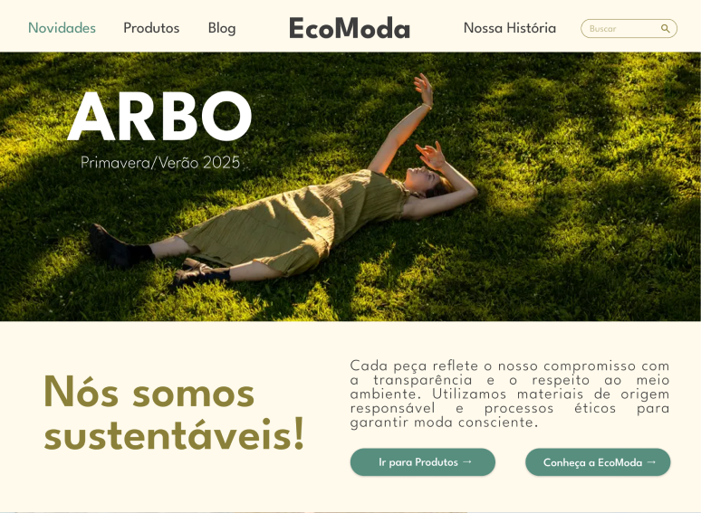

projetos
(projects)
EcoModa - Moda Sustentável
Protótipo de site desktop - UI Design - Figma
Desktop website prototype - UI Design - Figma
Protótipo de site desenvolvido para uma marca fictícia de moda sustentável, com foco em identidade visual, hierarquia de informação e experiência do usuário na navegação inicial.
(Website prototype developed for a fictional sustainable fashion brand, focused on visual identity, information hierarchy, and user experience within the landing page navigation.)
